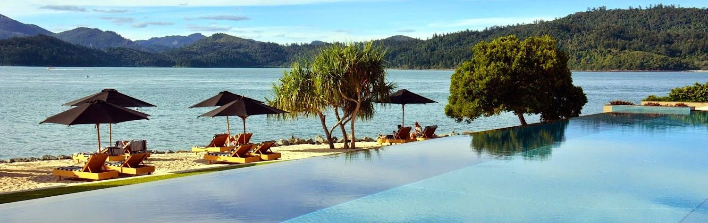

Australia really is like nowhere else on Earth. A giant island afloat in the Great Southern
Ocean, cut off from the rest of the world for millennia, this most ancient of continents has
long hidden its startling physical beauty and remarkable native wildlife from the rest of the
world. Inhabited by Aboriginal people who have coexisted with the land for more than 40,000
years, it was into this pristine wilderness that the British first arrived in 1788. With its
proximity to the Asian trading routes, and its isolated geography, Australia was the perfect
penal colony for Britain’s overcrowded shores. For the next 100 years, this beguiling land
remained the haunt of convicts, explorers and spirited free settlers, who together with growing
bands of intrepid gold-miners, pearlers, farmers and traders, forged an Australian spirit
that is characterized by independence, irreverence, and a good dose of humor.
Despite its transformation from wild hinterland into a sophisticated and glamorous nation,
the land and the spirit of Australia still have the power to captivate you like nowhere else.
With a population of only 23 million and a landmass almost the size of America, this is a vast,
untamed land where you can always find room to get off the beaten track and chance upon the
unexpected – as well as being peppered for choice in sensational cities like Sydney and Melbourne.
Sip your favorite cocktail as you cruise around Sydney Harbour on a luxury yacht,
unfurl your swag by a crackling campfire in the Outback, join a gourmet walking tour in Tasmania,
savor end-of-the-world views from an award-winning eco-lodge, or explore legendary World
Heritage Sites such as Kakadu National Park, the Ningaloo Coast and Lord Howe Island.
Journeying through Australia could last a lifetime, but there are a few locations that we’d
recommend as absolute highlights:
1.Dive or snorkel on the Great Barrier Reef, the largest structure on Earth made by living
organisms, and one of the seven wonders of the natural world. Grab your mask and flippers and
plunge into the turquoise waters of the world’s largest coral reef system, or just go island-hopping
around the 900 plus islands with some of the lushest rainforest and purest white sand in the world.
2.Visit the remarkable island-state of Tasmania, almost half of which is designated as World
Heritage wilderness. Explore the historic villages and byways which reverberate with Tasmania’s
penal past, kayak around the pink granite cliffs of the Freycinet Peninsula, discover sparkling
glacial lakes, and climb the stunning sub-alpine peaks of Cradle Mountain.
3.We’re not the only ones to have an enduring love affair with Sydney; it topped Forbes
Magazine’s List of Most Reliable Cities in 2013, which rated Sydney’s beauty and safety as top
notch. Sydney makes the perfect place for the start or end of your Australian adventure.
Spend a few days in this glorious harborside city, exploring the hidden bays and inlets
of Sydney Harbour on a luxury yacht, strolling around the historic sandstone terraces of
Paddington and Woollahra, taking a private surf lesson on Bondi Beach, or walking through
the many breathtaking harborside national parks at the heart of this lovely city.
4.Raise your glasses in the superb wine-growing regions of Margaret River, in Western
Australia, and the legendary Barossa Valley in South Australia. Outstanding destinations in
themselves, Margaret River is famous for its beautiful beaches, distinctive artistic ventures
and organic food. When visiting Barossa, spend a night strolling down the sandstone avenues
of Adelaide, one of Australia’s first ‘free settler towns’, and visit Kangaroo Island, an
enclave of dramatic coastlines and sea lion-ruled beaches. Kangaroo Island not only features
outstanding wildlife sanctuaries, but these South Australians are serious about their five-star
accommodation and superb locally-produced cuisine.
